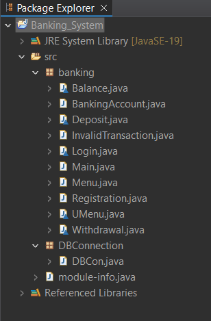

Objective
Create a command-line banking application using Java and JDBC that provides essential banking operations like registration, login, deposit, withdrawal, and balance enquiry.
Source Code
The complete source code for this project can be found on GitHub:
View the Source Code on GitHub
Project Structure
Below is an image of the project structure in the IDE:
Code Summary
This command-line banking application in Java uses JDBC to interact with a MySQL database, providing basic operations like registration, login, deposit, withdrawal, and balance enquiry. The application simulates a simple banking system.